MELAGE
Table of contents
Dependencies
This software depends on the following libraries:
matplotlib==3.6.1
nibabel==4.0.2
numba==0.56.4
numpy==1.23.3
opencv_python_headless==4.6.0.66
pickle5==0.0.11
Pillow==9.2.0
Pillow==10.0.0
pydicom==2.3.1
pyFFTW==0.13.0
PyOpenGL==3.1.6
PyOpenGL==3.1.7
PyQt5==5.15.9
PyQt5_sip==12.11.0
qtwidgets==0.18
scikit_image==0.19.3
scikit_learn==1.1.2
scipy==1.11.2
SimpleITK==2.2.0
SimpleITK==2.2.1
surfa==0.4.2
torch==1.12.1+cu116
trimesh==3.17.0
vtk==9.2.2
Installation
Windows and linux
It is very easy to install melage on pc and laptop
1. clone library
git clone [https://github.com/bahramjafrasteh/melage](https://github.com/bahramjafrasteh/melage) <br>
- install requirements
pip install -r requirements.txt
- run melage
python melage.py
Manual
main page
This is the main window that appears after running melage.
- To continue, you need to create a new project or load previously saved project
- The default format for the projects are ".bn"
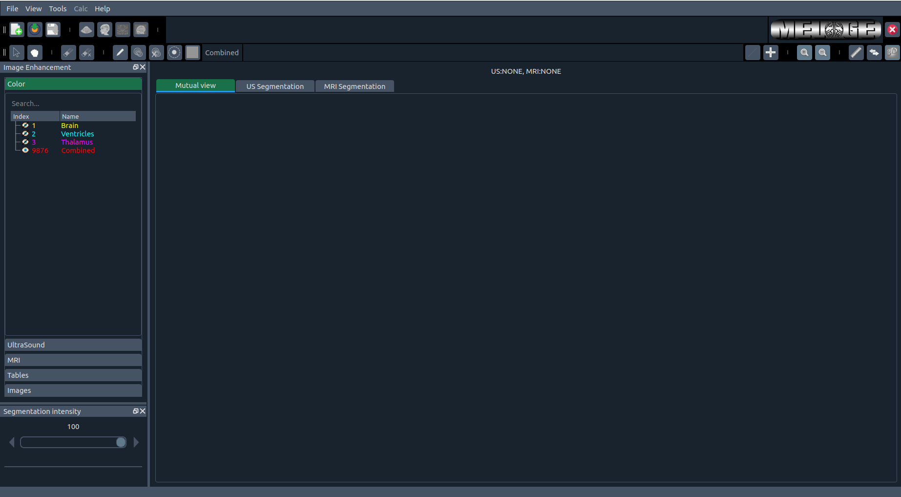
main window
Toolbars
1. Project toolbar
On the most top left of the page you find these three options from left to right:
- Create new project: It is used to create a new project in order to open a new image file.
- load a project: It is used to load a previously saved project with all of the changes. It helps to do not loose your previous work.
- save: This button is used to save current porject if there is any project. It can overwrite the same project.
These options are also available through:
- File -> new project
- File -> load project
- File -> save
from left to right: Create new project, load a project and save
2. image toolbar
In the right hand side of the project toolbar there is image toolbar to load two images at the same time.
From left to right
- Open ultrasound image: The default of this button is to open ultrasound image (some times referred as top image). You can open ultrasound or MRI image using this option
- Open MRI image: The default is to open an MRI image. It can be used to open both MRI and Ultrasound image
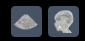
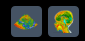
Open image toolbar left: There is no project. Right: A project has been loaded
3. Tools toolbar
In the top left hand side of MELAGE there are seven buttons divided in three sections
From left to right:
- Build lines: To build different lines in the same slice and then crate a segmentation by connecting end of these lines. Later it has has been explained it in details.
- Point selection: Locate the position of selected points in a slice.
- Zoom in: Zooming inside both three/six windows at the same time
- Zoom out: Zooming out both three/six windows at the same time
- Measurement: Ruler tool to measure distance and length
- Linking: To link sagittal, coronal and axial slices in the image. This option allows to find exact location of a point in other slices.
- 3D: This option allows apearance or dispearance of 3D widgets.
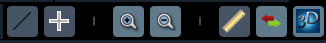
Necessary tools toolbar
4. Panning toolbar
Just below project toolbar there is panning toolbar that includes arrow and panning
From left to right:
- Arrow: Arrow
- Panning: Use to pan through a slice after or before zooming
Panning toolbar
5. Segmentation toolbar
In the right hand side of panning toolbar there is segmentation toolbar. From left to right it includes:
- Eraser: To erase segmentation over the image
- Eraser X times: To erase the same region multiple time from the next slices
- Pen: To segment image with arbitrary shape in a closed area.
- Contour: To draw a contour and segment everything inside it.
- Contour X times: Same as contour but with multiple times
- Circle: To segment a region based on a circle with adjustable radius.
- Activated color: Shows the activated color that can be used for segmentation.
- Color name: A text that shows the name of the activated color.
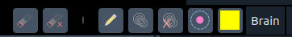
Segmentation toolbar
6. Exit toolbar
From left to right:
- Logo: MELAGE/MELAGE+ logo
- Exit: Exit button
Exit toolbar
Widgets
Color widget
|
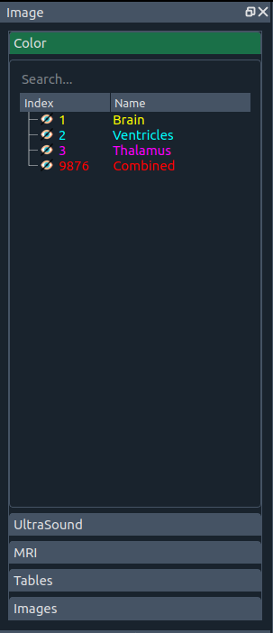
Color
|
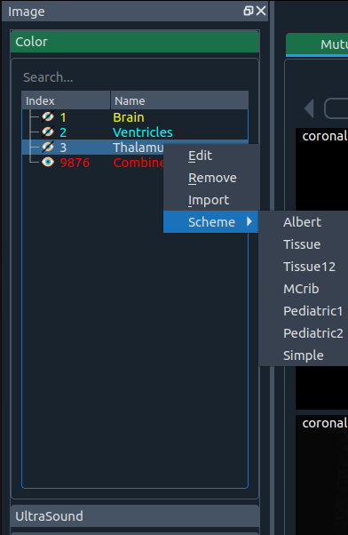
Right click
|
This feature can be used to show us different color combinations (LUT) for different structures in an image. The desired color can be activated and also can be searched for.
|
You can change the style as you want. Moreover you can add your custom style.
Currently suppported styles are from the following human brian atlases:
Moreover, thre are two tissue segmentations and one simple scheme.
One can easily import new style by clicking on import button.
The name of the lables can be changed.
A new label can be created by clicking on the color in the segmentation toolbar
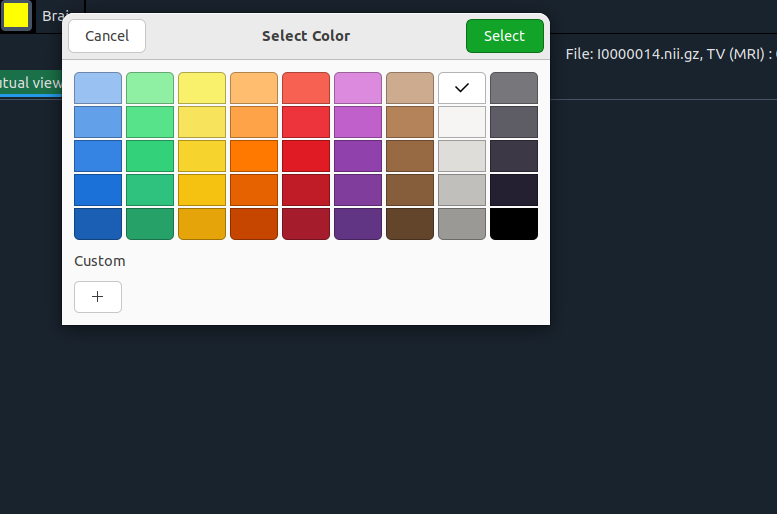
Add a color
A new color can be chosen here. Then, another windows will be opened as follows
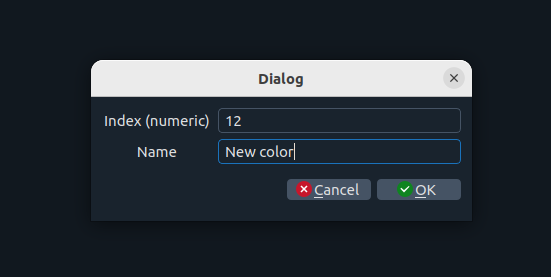
Add index and name
In this windows the index of new color and its name should be chosen. If the index of a new color already exist it replaces the index of previously existing color.
MRI widget
|
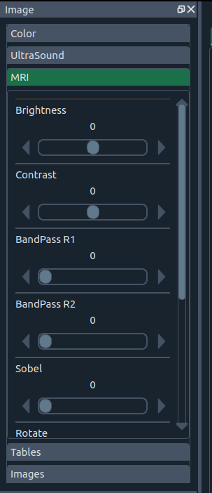
Widget MRI
|
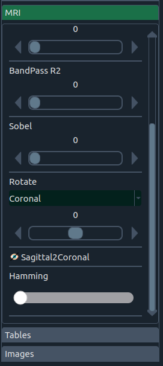
Widget MRI (continued)
|
Image enhancement widget including brightness, contrast improvement, bandpass filters, hamming filter and also sobel operator. There is an option to rotate image based on sagital, axil and coronal or their combinations. There is sagittal to coronal option to change the coronal and sagital for ultrasound images.
table widget
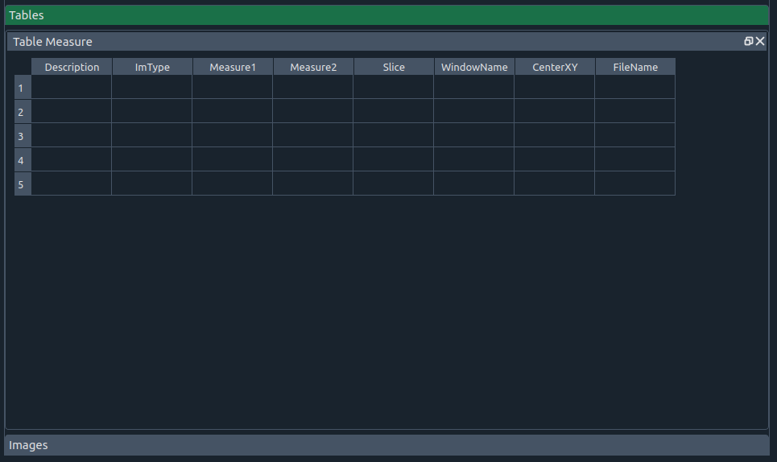
Widget table
This table includes
* Description: Additional description
* Image type: MRI (Bottom) or Ultrasound (Top)
* Measure 1: Surface or Length (ruler)
* Measure 2: Perimeter or Angle (ruler)
* Slice: Slice number
* Window name: Sagittal, Coronal or Axial
* CenterXY: Center position
* FileName: Name of the file
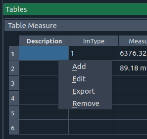
Widget table
Right click in the table widget can appear additional options:
* Add: adding new row
* Edit: Editting current cell
* Export: export table to CSV file
* Remove: eliminating current row
images widget
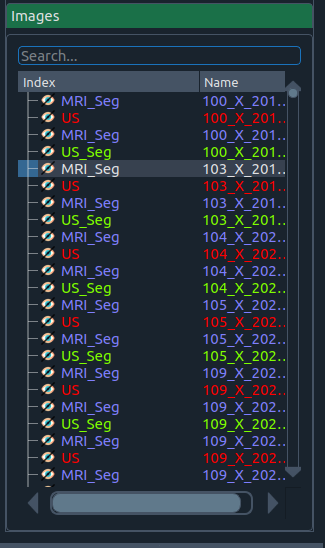
Widget images
This includes a set of images (MRI, Ultrasound, etc.) and the corresponding segmentation that can be selected an loaded later if it is needed.
The image can be visulized if the icon is activated.
A segmentation file can not be loaded before loading an image.
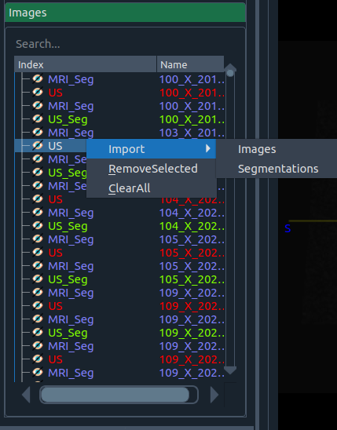
Widget images
Right click on this part can give access to
* Import
* Images: Importing images that can be MRI, Ultrasound, etc.
* Segmentation: Importing segmentation file that can also be MRI, Ultrasound, etc.
* RemoveSelected: Removing selected file
* Clear All: Clear all non active images
Importing dialouge will be appear as follows
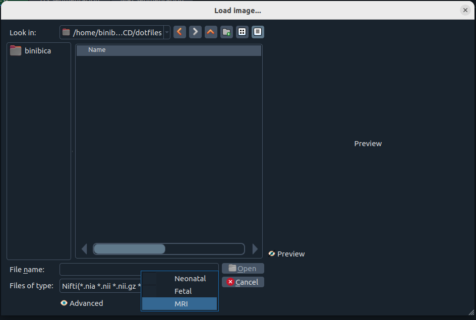
Widget images
The type of image file or segmentation file can be selected from this window. For example if "Neonatal" is selected the image is an ultrasound and for MRI files "MRI" option should be selected.
There is a preview option that can be used to preview an image before openning.
Segmentation intensity widget
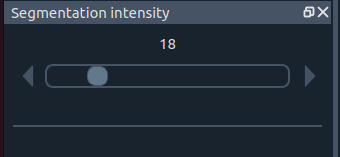
segmentation intensity
This widget has been designed to intensify the intensity of the color in the segmented region. If the vaule is equal to zero, it does not show any segmentation.
Marker size widget
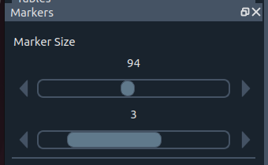
segmentation intensity
This widget has two parts from top to bottom:
- Incrase radius of the circle to segment regions
- Incrase thickness of pen in contour segmentation
Tabs
There are three tabs designed for MELAGE.
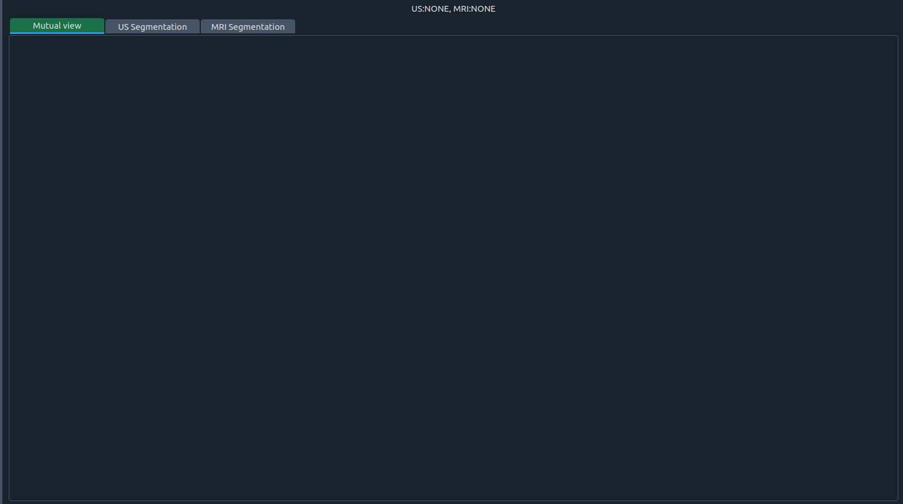
segmentation intensity
- Mutual view
- In this tab two images can be processed at the same time. In all images, the orders of the planes are coronal, sagittal and then axial. One can scroll over each plane separately.
- The number above each plane is the slice number.
- There is a letter in left, right, top and bottom of each plane. "S" stands for sagittal, "A" axial and "C" stands for coronal.
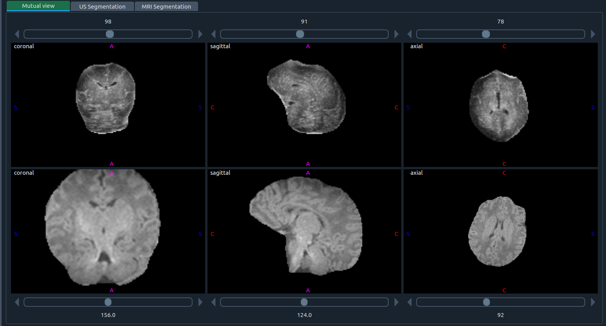
segmentation intensity
- One can segment each image and/or process images in this view.
- The top part is reserved for Ultrasound images and thus named top image for the process.
- The bottom images has been reserved for MRI images and named bottom image.
- If one image is closed this tab just shows three planes of the first image as shown below.
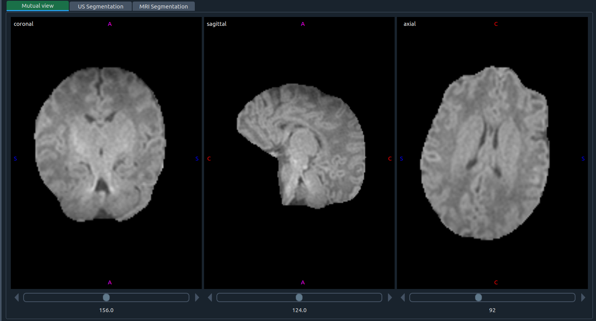
- Ultrasound segmentation
- This tabl has the following components:
- Image visulization and processing. It is ideal to see one plane in bigger size and concentrate on one plane while can see instantaneous 3D segmentation.
- Horizontal slidebar: To scroll over slices in the selected plane.
- Change planes (radio buttons): To select sagittal, axial or coronal slices in the image.
- show seg (radio button): To visualize or do not show segmented regions.
- 3D visualization: 3D visualization is an important part of MELAGE that later will be explained in details.
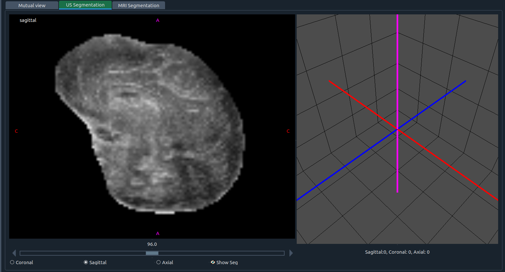
- MRI segmentation
- This tabl has the following components:
- Image visulization and processing. It is ideal to see one plane in bigger size and concentrate on one plane while can see instantaneous 3D segmentation.
- Horizontal slidebar: To scroll over slices in the selected plane.
- Change planes (radio buttons): To select sagittal, axial or coronal slices in the image.
- show seg (radio button): To visualize or do not show segmented regions.
- 3D visualization: 3D visualization is an important part of MELAGE that later will be explained in details.
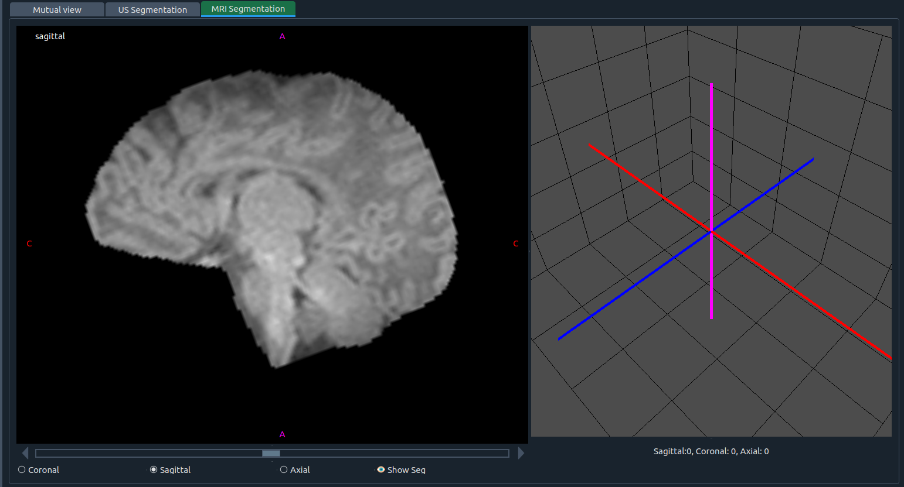
3D Visualization
Right click on this region give access to various options:
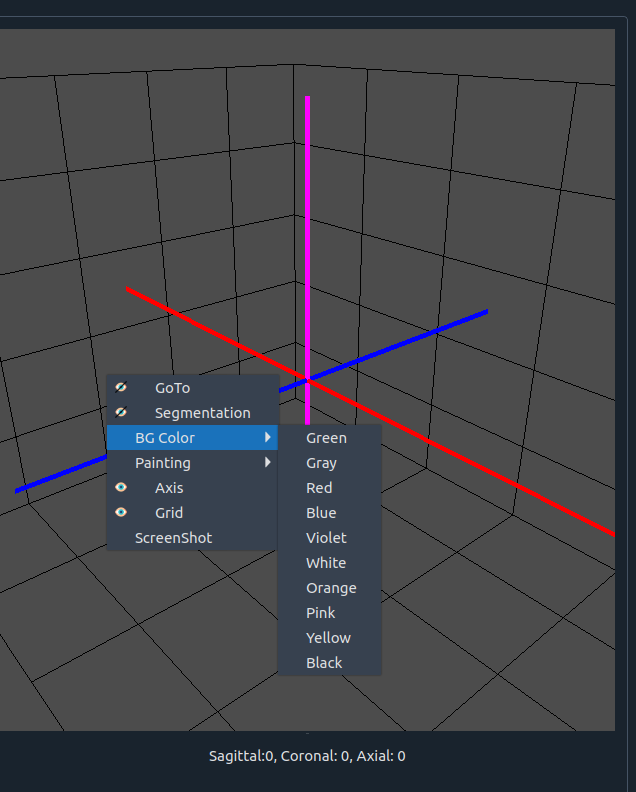
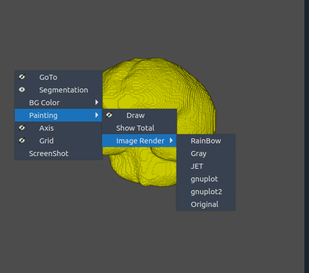
* Draw: It enables to draw in order to cut a part of 3D image.
<p align="center">
<img src="resource/manual_images/3D_rightc_paint_draw1.png" alt="MELAGE" width="700" style="border:1px solid black" object-fit="contain"/>
</p>
- Show total: To get back to orignal view without cut
- Image render: To render image in different colors. The segmentation intensity can help in better visulization.
|
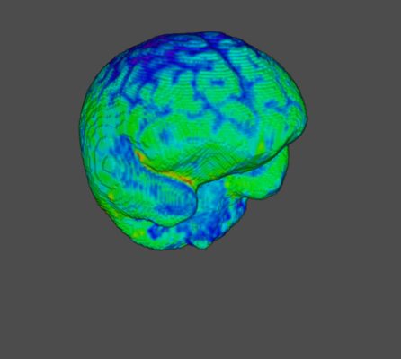
Rainbow
|
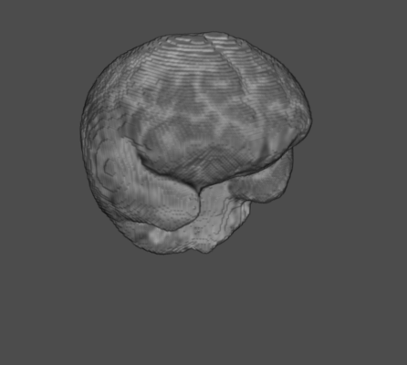
Gray
|
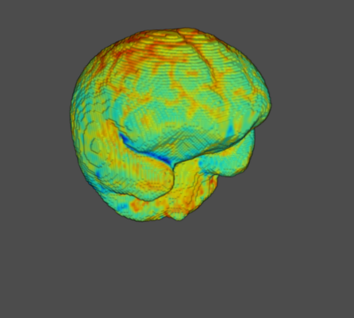
Jet
|
|
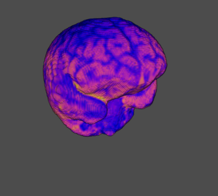
Gnuplot
|
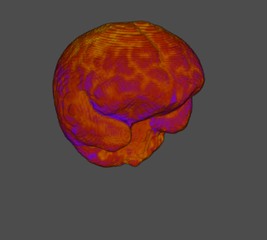
Gnuplot2
|
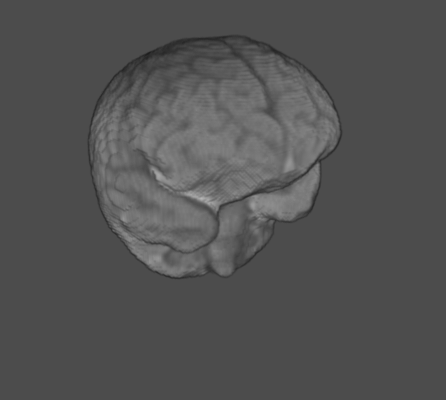
Original
|
- Axis: Show axis with 3D visulization
- Grid: Show grid with 3D visulization
Tools
segmentation options using contour
- selecting contour tools and right clicking on the segmented area can appear the following options:
- center: center of the segmented region
- surface are of the segmented region
- perimeter of the segmented region
- send the above infomration to table
- Add to interpolation: Add the current slice for slice to slice interpolation
- Apply interpolation by adding the current slice to the interpolation
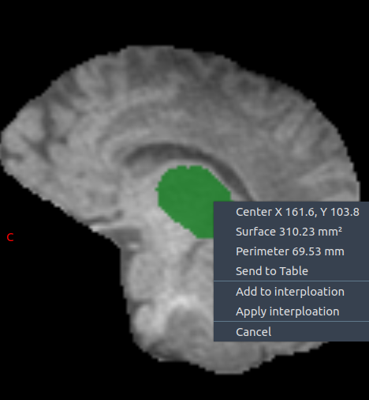
interpolation between slices
To use this option:
- Activate desired colors that want to interpolate
- select a segmented region in one of the planes (sagittal, axial or coronal)
- add another region from other slice to the interpolation algorithm. You can add as mucch as want.
- Right click on apply interpolation
- wait until the interpolation results appear.
Ruler
- Ruler has been designed to measure the distances between two points in an image. Before using it, ruler button should be pressed. Right click includes:
- Center position
- Length
- Line angle
- Remove: eliminating current ruler
- sending the information to the table
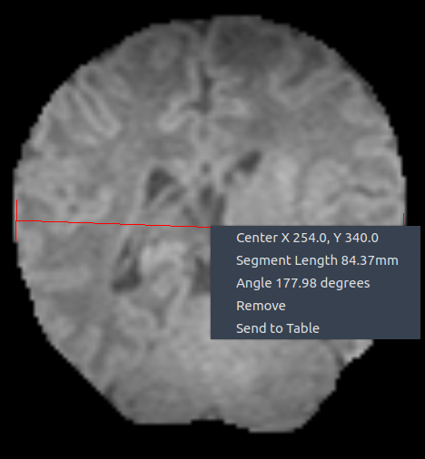
There are no limits for adding new ruler.
Tools menu
- In tools menu there are various options:
- Undo: To get back to previous segmentations (until 10 previous segmentation)
- Redo: It is opposite of the undo (until 10 times)
- Preprocessing: including N4 Bias Field Correction, Image Masking, BET, DeepBET, Image Thresholding, Masking Operation, Change CS.
- Basic Info: including Image Histogram, Resize, Image Information.
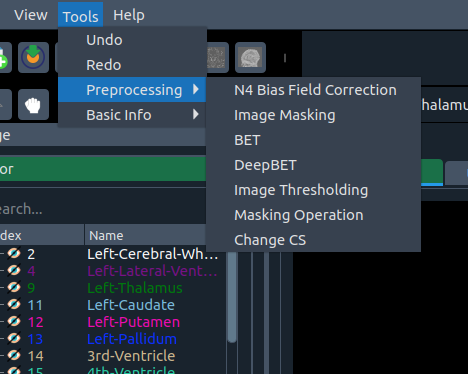
- N4 Bias Field Correction
- N4 Bias Field Correction by the help of SimpleITK library
- The parameters are:
- Otsu : To use Otsu multiple thresholding to crate mask image.
- Fiting level: Number of fitting
- Shrinking factor: reduction factor
- Max Iterations: Maximum number of iterations
- On the bottom left : There is a combox to select the right image. Bottom image is MRI and top image stands for ultrasound image.
- By clicking on apply the algorithm starts to work. As it is computational needs its time to finish. Do not worry if application is not working during this time.
- After finishing the algoirhtm another button "Original" appears, which means you can get back to original image if you are not happy with the results.
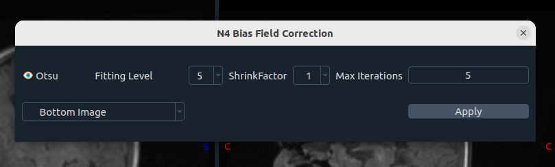
- Image Masking:
- This tool has been designed to remain with a part of image with respect to the segmentation.
- From left to right and top to bottom:
- A combo box to select the right image. Bottom image is MRI and top image stands for ultrasound image.
- A combo box (keep or remove): To keep or remove part of image according to selected masking color
- Mask Color: The color used to mask image
- Bottom right: To apply the masking on image
- To get back to original image, the masking color should be "9876_Combined".
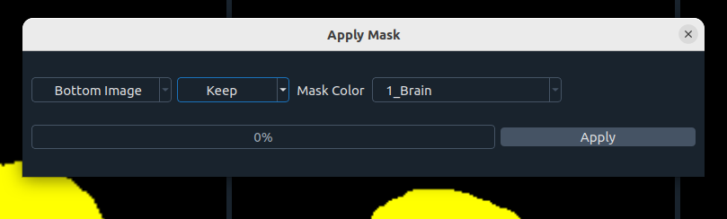
Smith SM. Fast robust automated brain extraction.
Hum Brain Mapp.2002 Nov;17(3):143-55. doi: 10.1002/hbm.10062. PMID: 12391568; PMCID: PMC6871816.
*Its parameters are:
* Advanced: To enable change default parameters
* Iterations: Number of iterations
* Adaptive thresholding: To enable automatically select lower and upper bound
* Fractional Threshold: (see paper)
* Search distance (see paper)
* Radius of curvature (see paper)
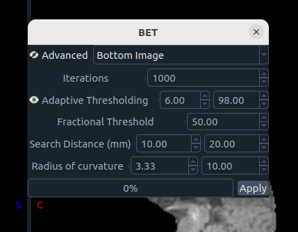
- Deep Learning Brain Extraction
- This tool includes deep learning based brain extraction tools
- From top to bottom and from left to right
- Advanced : Enables editting
- Image selection: To select proper image
- Model selection: To select a deep learning model
- Cuda: To enable GPU processing (it is not recommended except if you have a high capacity GPU)
- Image type: MRI or Ultrasound
- Threshold: The thresholding value (between -4 to 4)
- Load Network Weights : To select path of network weights
- Apply: To run the model
- Tips: If you run the model and you are not satisfied with the results, you can change the threshold without needing to run the model again.
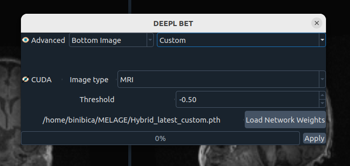
- Image Thresholding
- Image thresholding based on Multi-Otsu thresholding method.
- From left to right
- Image selection
- Number of classes : Number of classes for image thresholding
- Apply: To execute the algorithm
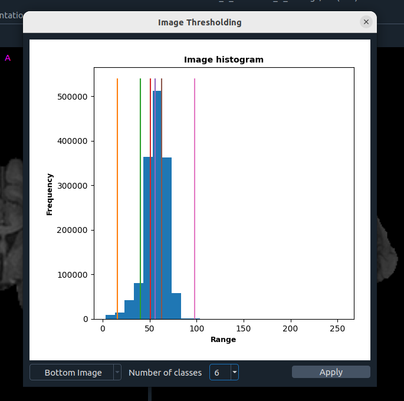
-
Masking Operations
- To sum and subtract masking colors
- From let to right
- Masking color: Select a masking color (The results will appear for this index)
- Operation: Select proper operation (summation or subtraction)
- Masking color: Select a masking color
- Image selection: select MRI or Ultrasound
- Apply: Execut masking
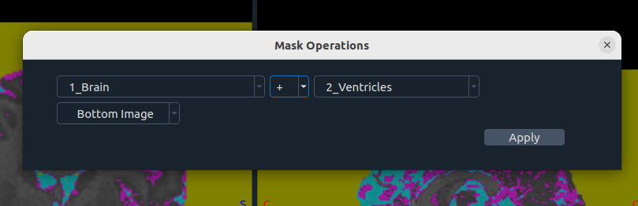
-
Change CS
- To change image coordinate system
- From left to right
- Image selection
- From : show the current coordinate system
- To: choose the desired coordinate system from the combo box
- Apply: run the algorithm to see the results
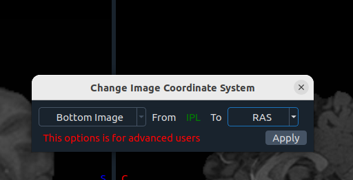
-
Basic info
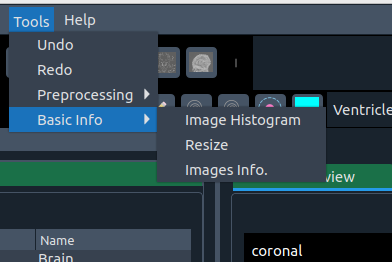
- It includes
- image histogram: To show image histogram
- Resize: Isotropic resizing imgage to a desire spacing
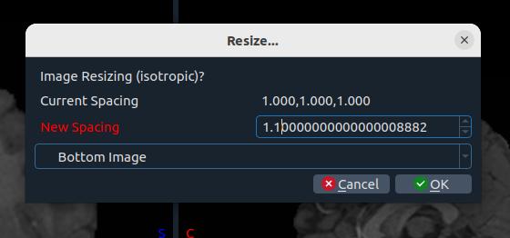
- Images info. : information extracted from a loaded image. In the bottom there is a search option.
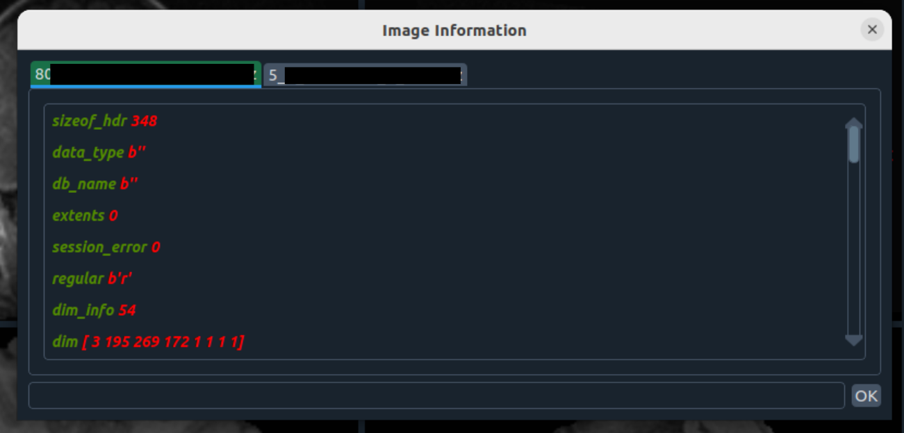
File Menu
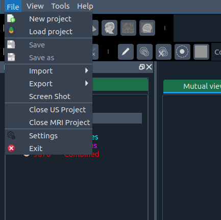
- It includes:
- New project: To create a new project
- Load project: To load a previously save project
- Save: To save the current project
- Save as: To save the current project into another file
- Import: Import a segmentation file
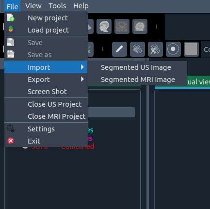
- Export: Export modified image or modified segmentation as a new file. It automatically adds a suffix to the end of the current file.
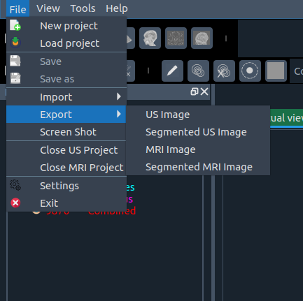
- Screen shot: Take a screen shot form one of the plane or whole of the scene.
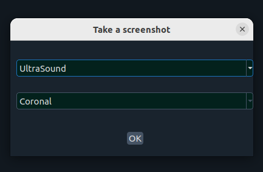
- Close US project: Closing an ultrasound image or the image appears on the top.
- Close MRI project: Closing a MRI image or the image appears on the bottom
- Setting: To change defaults setting of the application. align="center">
- Exit: To exit the application. On pressing this button another window appears to ask you if you want to save the project or not.
license
To ask for a license please contact mealge@inibica.es or jafrasteh.bahram@inibica.es.
Citation and acknowledgements
Please cite us:
Jafrasteh, B., Lubián-López, S. P., & Benavente-Fernández, I. (2023).
MELAGE: A purely python based Neuroimaging software (Neonatal). arXiv preprint arXiv:X.X.
Releases